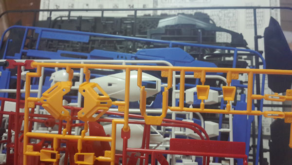
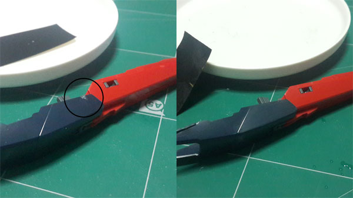
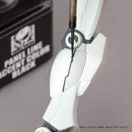
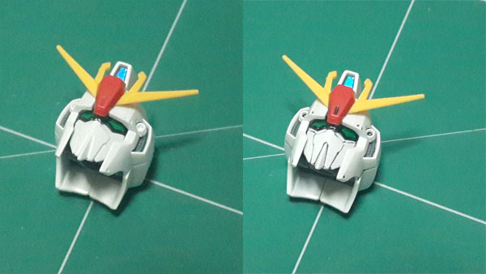
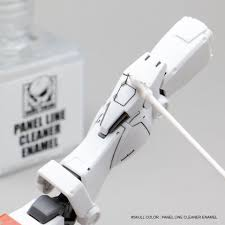
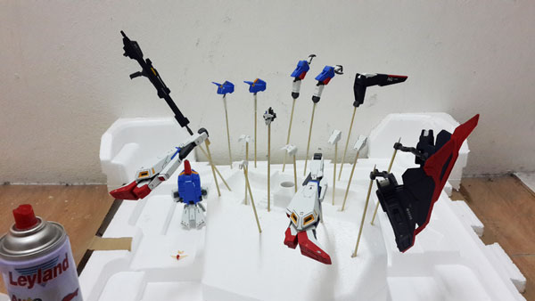
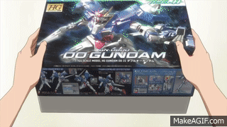

The assembly method is as follows.
1. Assemble
The first step is considered to be the starting point for connecting the puppet. Upon opening the box, you'll find several panels in there. It is recommended that the panel should be arranged in alphabetical order before chasing from A B C D … When finished, when starting to continue , look at the manual step by step. which panel number to use from which panel choose to cut only the pieces that will be used and then put them together Keep doing it step by step, it will be finished as a complete work easily.
***Don't cut the pieces off the panel all at once, as this will make the number unknown and very confusing.***
2. Close the wound
After assembling the workpiece has been completed There may be wounds in some places caused by cutting mistakes. or the plastic texture is white because of cutting Makes the work not beautiful, can use fine sandpaper to smooth the workpiece or use a rasp glass to polish
3. Cut lines (draw patterns)
After assembling the puppet into a body, try to observe the deep lines along the puppet. Which to make our work more beautiful, it can be done by reiterating the pattern on the puppet more clearly by using a black pen or panelline to paint over that pattern. But it requires a specific technique to help make the work come out beautiful.
Let's compare the work before and after cutting the line. There are enough differences.
4.Wipe off ink stains with x-20 Enamel thinner.
5.Spray paint, Clear work
After going through the cutting line process, if you leave the work like that for a long time, it may cause the detailed work to fall off. The last step in making Gunpla should end with using it. Spray a coat of spray paint over another area to protect the details of the workpiece that has been made to stick firmly for a long time.
Comparison of plastic painted workpieces And the details that we make out will stand out clearly.
But the unsprayed workpiece will have the gloss of the plastic. I see the plastic gang clearly.
Have you fun assembling PLASTIC MODEL KITS!!!
